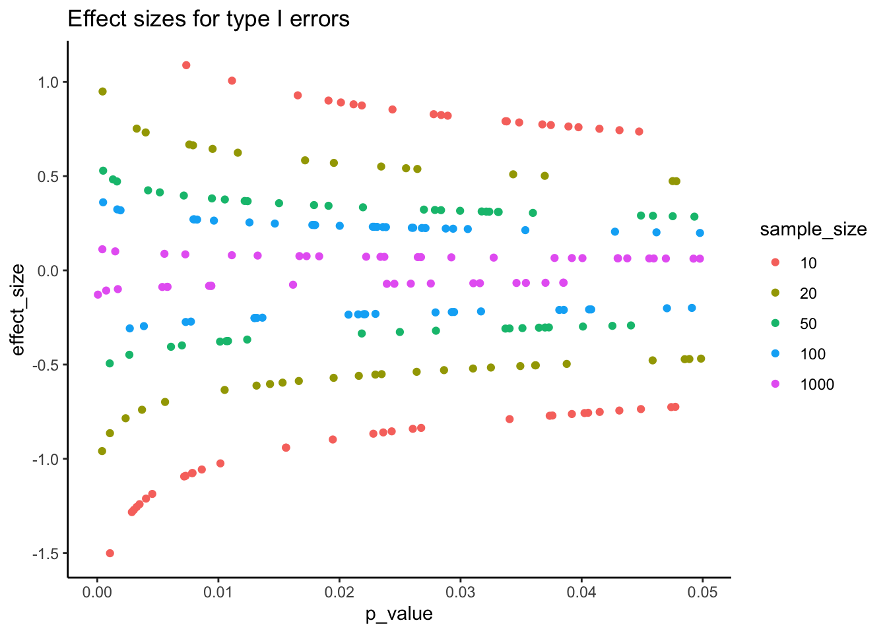
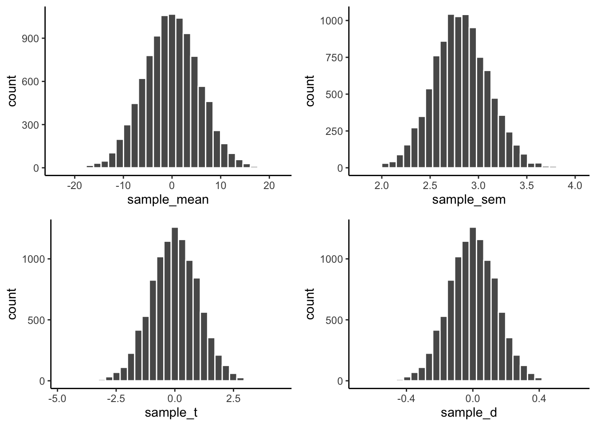

12 Thinking about answering questions with data
You might be happy that this is the last chapter (so far) of this textbook. At this point we are in the last weeks of our introductory statistics course. It’s called “introductory” for a reason. There’s just too much out there to cover in one short semester. In this chapter we acknowledge some of the things we haven’t yet covered, and treat them as things that you should think about. If there is one take home message that we want to get across to you, it’s that when you ask questions with data, you should be able to justify how you answer those questions.
12.1 Effect-size and power
If you already know something about statistics while you were reading this book, you might have noticed that we neglected to discuss the topic of effect-size, and we barely talked about statistical power. We will talk a little bit about these things here.
First, it is worth pointing out that over the years, at least in Psychology, many societies and journals have made recommendations about how researchers should report their statistical analyses. Among the recommendations is that measures of “effect size” should be reported. Similarly, many journals now require that researchers report an “a priori” power-analysis (the recommendation is this should be done before the data is collected). Because these recommendations are so prevalent, it is worth discussing what these ideas refer to. At the same time, the meaning of effect-size and power somewhat depend on your “philosophical” bent, and these two ideas can become completely meaningless depending on how you think of statistics. For these complicating reasons we have suspended our discussion of the topic until now.
The question or practice of using measures of effect size and conducting power-analyses are also good examples of the more general need to think about about what you are doing. If you are going to report effect size, and conduct power analyses, these activities should not be done blindly because someone else recommends that you do them, these activities and other suitable ones should be done as a part of justifying what you are doing. It is a part of thinking about how to make your data answer questions for you.
12.1.1 Chance vs. real effects
Let’s rehash something we’ve said over and over again. First, researchers are interested in whether their manipulation causes a change in their measurement. If it does, they can become confident that they have uncovered a causal force (the manipulation). However, we know that differences in the measure between experimental conditions can arise by chance alone, just by sampling error. In fact, we can create pictures that show us the window of chance for a given statistic, these tells us roughly the range and likelihoods of getting various differences just by chance. With these windows in hand, we can then determine whether the differences we found in some data that we collected were likely or unlikely to be due to chance. We also learned that sample-size plays a big role in the shape of the chance window. Small samples give chance a large opportunity make big differences. Large samples give chance a small opportunity to make big differences. The general lesson up to this point has been, design an experiment with a large enough sample to detect the effect of interest. If your design isn’t well formed, you could easily be measuring noise, and your differences could be caused by sampling error. Generally speaking, this is still a very good lesson: better designs produce better data; and you can’t fix a broken design with statistics.
There is clearly another thing that can determine whether or not your differences are due to chance. That is the effect itself. If the manipulation does cause a change, then there is an effect, and that effect is a real one. Effects refer to differences in the measurement between experimental conditions. The thing about effects is that they can be big or small, they have a size.
For example, you can think of a manipulation in terms of the size of its hammer. A strong manipulation is like a jack-hammer: it is loud, it produces a big effect, it creates huge differences. A medium manipulation is like regular hammer: it works, you can hear it, it drives a nail into wood, but it doesn’t destroy concrete like a jack-hammer, it produces a reliable effect. A small manipulation is like tapping something with a pencil: it does something, you can barely hear it, and only in a quiet room, it doesn’t do a good job of driving a nail into wood, and it does nothing to concrete, it produces tiny, unreliable effects. Finally, a really small effect would be hammering something with a feather, it leaves almost no mark and does nothing that is obviously perceptiple to nails or pavement. The lesson is, if you want to break up concrete, use a jack-hammer; or, if you want to measure your effect, make your manipulation stronger (like a jack-hammer) so it produces a bigger difference.
12.1.2 Effect size: concrete vs. abstract notions
Generally speaking, the big concept of effect size, is simply how big the differences are, that’s it. However, the biggness or smallness of effects quickly becomes a little bit complicated. On the one hand, the raw difference in the means can be very meaningful. Let’s saw we are measuring performance on a final exam, and we are testing whether or not a miracle drug can make you do better on the test. Let’s say taking the drug makes you do 5% better on the test, compared to not taking the drug. You know what 5% means, that’s basically a whole letter grade. Pretty good. An effect-size of 25% would be even better right! Lot’s of measures have a concrete quality to them, and we often want to the size of the effect expressed in terms of the original measure.
Let’s talk about concrete measures some more. How about learning a musical instrument. Let’s say it takes 10,000 hours to become an expert piano, violin, or guitar player. And, let’s say you found something online that says that using their method, you will learn the instrument in less time than normal. That is a claim about the effect size of their method. You would want to know how big the effect is right? For example, the effect-size could be 10 hours. That would mean it would take you 9,980 hours to become an expert (that’s a whole 10 hours less). If I knew the effect-size was so tiny, I wouldn’t bother with their new method. But, if the effect size was say 1,000 hours, that’s a pretty big deal, that’s 10% less (still doesn’t seem like much, but saving 1,000 hours seems like a lot).
Just as often as we have concrete measures that are readily interpretable, Psychology often produces measures that are extremely difficult to interpret. For example, questionnaire measures often have no concrete meaning, and only an abstract statistical meaning. If you wanted to know whether a manipulation caused people to more or less happy, and you used to questionnaire to measure happiness, you might find that people were 50 happy in condition 1, and 60 happy in condition 2, that’s a difference of 10 happy units. But how much is 10? Is that a big or small difference? It’s not immediately obvious. What is the solution here? A common solution is to provide a standardized measure of the difference, like a z-score. For example, if a difference of 10 reflected a shift of one standard deviation that would be useful to know, and that would be a sizeable shift. If the difference was only a .1 shift in terms of standard deviation, then the difference of 10 wouldn’t be very large. We elaborate on this idea next in describing cohen’s d.
12.1.3 Cohen’s d
Let’s look a few distributions to firm up some ideas about effect-size. Figure 12.1 has four panels. The first panel (0) represents the null distribution of no differences. This is the idea that your manipulation (A vs. B) doesn’t do anything at all, as a result when you measure scores in conditions A and B, you are effectively sampling scores from the very same overall distribution. The panel shows the distribution as green for condition B, but the red one for condition A is identical and drawn underneath (it’s invisible). There is 0 difference between these distributions, so it represent a null effect.
The remaining panels are hypothetical examples of what a true effect could look like, when your manipulation actually causes a difference. For example, if condition A is a control group, and condition B is a treatment group, we are looking at three cases where the treatment manipulation causes a positive shift in the mean of distribution. We are using normal curves with mean =0 and sd =1 for this demonstration, so a shift of .5 is a shift of half of a standard deviation. A shift of 1 is a shift of 1 standard deviation, and a shift of 2 is a shift of 2 standard deviations. We could draw many more examples showing even bigger shifts, or shifts that go in the other direction.
Let’s look at another example, but this time we’ll use some concrete measurements. Let’s say we are looking at final exam performance, so our numbers are grade percentages. Let’s also say that we know the mean on the test is 65%, with a standard deviation of 5%. Group A could be a control that just takes the test, Group B could receive some “educational” manipulation designed to improve the test score. These graphs then show us some hypotheses about what the manipulation may or may not be doing.
The first panel shows that both condition A and B will sample test scores from the same distribution (mean =65, with 0 effect). The other panels show shifted mean for condition B (the treatment that is supposed to increase test performance). So, the treatment could increase the test performance by 2.5% (mean 67.5, .5 sd shift), or by 5% (mean 70, 1 sd shift), or by 10% (mean 75%, 2 sd shift), or by any other amount. In terms of our previous metaphor, a shift of 2 standard deviations is more like jack-hammer in terms of size, and a shift of .5 standard deviations is more like using a pencil. The thing about research, is we often have no clue about whether our manipulation will produce a big or small effect, that’s why we are conducting the research.
You might have noticed that the letter \(d\) appears in the above figure. Why is that? Jacob Cohen (cohen1988?) used the letter \(d\) in defining the effect-size for this situation, and now everyone calls it Cohen’s \(d\). The formula for Cohen’s \(d\) is:
\(d = \frac{\text{mean for condition 1} - \text{mean for condition 2}}{\text{population standard deviation}}\)
If you notice, this is just a kind of z-score. It is a way to standardize the mean difference in terms of the population standard deviation.
It is also worth noting again that this measure of effect-size is entirely hypothetical for most purposes. In general, researchers do not know the population standard deviation, they can only guess at it, or estimate it from the sample. The same goes for means, in the formula these are hypothetical mean differences in two population distributions. In practice, researchers do not know these values, they guess at them from their samples.
Before discussing why the concept of effect-size can be useful, we note that Cohen’s \(d\) is useful for understanding abstract measures. For example, when you don’t know what a difference of 10 or 20 means as a raw score, you can standardize the difference by the sample standard deviation, then you know roughly how big the effect is in terms of standard units. If you thought a 20 was big, but it turned out to be only 1/10th of a standard deviation, then you would know the effect is actually quite small with respect to the overall variability in the data.
12.2 Power
When there is a true effect out there to measure, you want to make sure your design is sensitive enough to detect the effect, otherwise what’s the point. We’ve already talked about the idea that an effect can have different sizes. The next idea is that your design can be more less sensitive in its ability to reliabily measure the effect. We have discussed this general idea many times already in the textbook, for example we know that we will be more likely to detect “significant” effects (when there are real differences) when we increase our sample-size. Here, we will talk about the idea of design sensitivity in terms of the concept of power. Interestingly, the concept of power is a somewhat limited concept, in that it only exists as a concept within some philosophies of statistics.
12.2.1 A digresssion about hypothesis testing
In particular, the concept of power falls out of the Neyman-Pearson concept of null vs. alternative hypothesis testing. Up to this point, we have largely avoided this terminology. This is perhaps a disservice in that the Neyman-Pearson ideas are by now the most common and widespread, and in the opinion of some of us, they are also the most widely misunderstood and abused idea, which is why we have avoided these ideas until now.
What we have been mainly doing is talking about hypothesis testing from the Fisherian (Sir Ronald Fisher, the ANOVA guy) perspective. This is a basic perspective that we think can’t be easily ignored. It is also quite limited. The basic idea is this:
- We know that chance can cause some differences when we measure something between experimental conditions.
- We want to rule out the possibility that the difference that we observed can not be due to chance
- We construct large N designs that permit us to do this when a real effect is observed, such that we can confidently say that big differences that we find are so big (well outside the chance window) that it is highly implausible that chance alone could have produced.
- The final conclusion is that chance was extremely unlikely to have produced the differences. We then infer that something else, like the manipulation, must have caused the difference.
- We don’t say anything else about the something else.
- We either reject the null distribution as an explanation (that chance couldn’t have done it), or retain the null (admit that chance could have done it, and if it did we couldn’t tell the difference between what we found and what chance could do)
Neyman and Pearson introduced one more idea to this mix, the idea of an alternative hypothesis. The alternative hypothesis is the idea that if there is a true effect, then the data sampled into each condition of the experiment must have come from two different distributions. Remember, when there is no effect we assume all of the data cam from the same distribution (which by definition can’t produce true differences in the long run, because all of the numbers are coming from the same distribution). The graphs of effect-sizes from before show examples of these alternative distributions, with samples for condition A coming from one distribution, and samples from condition B coming from a shifted distribution with a different mean.
So, under the Neyman-Pearson tradition, when a researcher find a signifcant effect they do more than one things. First, they reject the null-hypothesis of no differences, and they accept the alternative hypothesis that there was differences. This seems like a sensible thing to do. And, because the researcher is actually interested in the properties of the real effect, they might be interested in learning more about the actual alternative hypothesis, that is they might want to know if their data come from two different distributions that were separated by some amount…in other words, they would want to know the size of the effect that they were measuring.
12.2.2 Back to power
We have now discussed enough ideas to formalize the concept of statistical power. For this concept to exist we need to do a couple things.
- Agree to set an alpha criterion. When the p-value for our test-statistic is below this value we will call our finding statistically significant, and agree to reject the null hypothesis and accept the “alternative” hypothesis (sidenote, usually it isn’t very clear which specific alternative hypothesis was accepted)
- In advance of conducting the study, figure out what kinds of effect-sizes our design is capable of detecting with particular probabilites.
The power of a study is determined by the relationship between
- The sample-size of the study
- The effect-size of the manipulation
- The alpha value set by the researcher.
To see this in practice let’s do a simulation. We will do a t-test on a between-groups design 10 subjects in each group. Group A will be a control group with scores sampled from a normal distribution with mean of 10, and standard deviation of 5. Group B will be a treatment group, we will say the treatment has an effect-size of Cohen’s \(d\) = .5, that’s a standard deviation shift of .5, so the scores with come from a normal distribution with mean =12.5 and standard deivation of 5. Remember 1 standard deviation here is 5, so half of a standard deviation is 2.5.
The following R script runs this simulated experiment 1000 times. We set the alpha criterion to .05, this means we will reject the null whenever the \(p\)-value is less than .05. With this specific design, how many times out of of 1000 do we reject the null, and accept the alternative hypothesis?
#> [1] 167The answer is that we reject the null, and accept the alternative 167 times out of 1000. In other words our experiment succesfully accepts the alternative hypothesis 16.7 percent of the time, this is known as the power of the study. Power is the probability that a design will succesfully detect an effect of a specific size.
Importantly, power is completely abstract idea that is completely determined by many assumptions including N, effect-size, and alpha. As a result, it is best not to think of power as a single number, but instead as a family of numbers.
For example, power is different when we change N. If we increase N, our samples will more precisely estimate the true distributions that they came from. Increasing N reduces sampling error, and shrinks the range of differences that can be produced by chance. Lets’ increase our N in this simulation from 10 to 20 in each group and see what happens.
#> [1] 344Now the number of significant experiments i 344 out of 1000, or a power of 34.4 percent. That’s roughly doubled from before. We have made the design more sensitive to the effect by increasing N.
We can change the power of the design by changing the alpha-value, which tells us how much evidence we need to reject the null. For example, if we set the alpha criterion to 0.01, then we will be more conservative, only rejecting the null when chance can produce the observed difference 1% of the time. In our example, this will have the effect of reducing power. Let’s keep N at 20, but reduce the alpha to 0.01 and see what happens:
#> [1] 153Now only 153 out of 1000 experiments are significant, that’s 15.3 power.
Finally, the power of the design depends on the actual size of the effect caused by the manipulation. In our example, we hypothesized that the effect caused a shift of .5 standard deviations. What if the effect causes a bigger shift? Say, a shift of 2 standard deviations. Let’s keep N= 20, and alpha < .01, but change the effect-size to two standard deviations. When the effect in the real-world is bigger, it should be easier to measure, so our power will increase.
#> [1] 1000Neat, if the effect-size is actually huge (2 standard deviation shift), then we have power 100 percent to detect the true effect.
12.2.3 Power curves
We mentioned that it is best to think of power as a family of numbers, rather than as a single number. To elaborate on this consider the power curve below. This is the power curve for a specific design: a between groups experiments with two levels, that uses an independent samples t-test to test whether an observed difference is due to chance. Critically, N is set to 10 in each group, and alpha is set to .05
In Figure 12.3 power (as a proportion, not a percentage) is plotted on the y-axis, and effect-size (Cohen’s d) in standard deviation units is plotted on the x-axis.
A power curve like this one is very helpful to understand the sensitivity of a particular design. For example, we can see that a between subjects design with N=10 in both groups, will detect an effect of d=.5 (half a standard deviation shift) about 20% of the time, will detect an effect of d=.8 about 50% of the time, and will detect an effect of d=2 about 100% of the time. All of the percentages reflect the power of the design, which is the percentage of times the design would be expected to find a \(p\) < 0.05.
Let’s imagine that based on prior research, the effect you are interested in measuring is fairly small, d=0.2. If you want to run an experiment that will detect an effect of this size a large percentage of the time, how many subjects do you need to have in each group? We know from the above graph that with N=10, power is very low to detect an effect of d=0.2. Let’s make Figure 12.4 and vary the number of subjects rather than the size of the effect.

The figure plots power to detect an effect of d=0.2, as a function of N. The green line shows where power = .8, or 80%. It looks like we would nee about 380 subjects in each group to measure an effect of d=0.2, with power = .8. This means that 80% of our experiments would succesfully show p < 0.05. Often times power of 80% is recommended as a reasonable level of power, however even when your design has power = 80%, your experiment will still fail to find an effect (associated with that level of power) 20% of the time!
12.3 Planning your design
Our discussion of effect size and power highlight the importance of the understanding the statistical limitations of an experimental design. In particular, we have seen the relationship between:
- Sample-size
- Effect-size
- Alpha criterion
- Power
As a general rule of thumb, small N designs can only reliably detect very large effects, whereas large N designs can reliably detect much smaller effects. As a researcher, it is your responsibility to plan your design accordingly so that it is capable of reliably detecting the kinds of effects it is intended to measure.
12.4 Some considerations
12.4.1 Low powered studies
Consider the following case. A researcher runs a study to detect an effect of interest. There is good reason, from prior research, to believe the effect-size is d=0.5. The researcher uses a design that has 30% power to detect the effect. They run the experiment and find a significant p-value, (p<.05). They conclude their manipulation worked, because it was unlikely that their result could have been caused by chance. How would you interpret the results of a study like this? Would you agree with thte researchers that the manipulation likely caused the difference? Would you be skeptical of the result?
The situation above requires thinking about two kinds of probabilities. On the one hand we know that the result observed by the researchers does not occur often by chance (p is less than 0.05). At the same time, we know that the design was underpowered, it only detects results of the expected size 30% of the time. We are face with wondering what kind of luck was driving the difference. The researchers could have gotten unlucky, and the difference really could be due to chance. In this case, they would be making a type I error (saying the result is real when it isn’t). If the result was not due to chance, then they would also be lucky, as their design only detects this effect 30% of the time.
Perhaps another way to look at this situation is in terms of the replicability of the result. Replicability refers to whether or not the findings of the study would be the same if the experiment was repeated. Because we know that power is low here (only 30%), we would expect that most replications of this experiment would not find a significant effect. Instead, the experiment would be expected to replicate only 30% of the time.
12.4.2 Large N and small effects
Perhaps you have noticed that there is an intriguiing relationship between N (sample-size) and power and effect-size. As N increases, so does power to detect an effect of a particular size. Additionally, as N increases, a design is capable of detecting smaller and smaller effects with greater and greater power. For example, if N was large enough, we would have high power to detect very small effects, say d= 0.01, or even d=0.001. Let’s think about what this means.
Imagine a drug company told you that they ran an experiment with 1 billion people to test whether their drug causes a significant change in headache pain. Let’s say they found a significant effect (with power =100%), but the effect was very small, it turns out the drug reduces headache pain by less than 1%, let’s say 0.01%. For our imaginary study we will also assume that this effect is very real, and not caused by chance.
Clearly the design had enough power to detect the effect, and the effect was there, so the design did detect the effect. However, the issue is that there is little practical value to this effect. Nobody is going to by a drug to reduce their headache pain by 0.01%, even if it was “scientifcally proven” to work. This example brings up two issues. First, increasing N to very large levels will allow designs to detect almost any effect (even very tiny ones) with very high power. Second, sometimes effects are meaningless when they are very small, especially in applied research such as drug studies.
These two issues can lead to interesting suggestions. For example, someone might claim that large N studies aren’t very useful, because they can always detect really tiny effects that are practically meaningless. On the other hand, large N studies will also detect larger effects too, and they will give a better estimate of the “true” effect in the population (because we know that larger samples do a better job of estimating population parameters). Additionally, although really small effects are often not interesting in the context of applied research, they can be very important in theoretical research. For example, one theory might predict that manipulating X should have no effect, but another theory might predict that X does have an effect, even if it is a small one. So, detecting a small effect can have theoretical implication that can help rule out false theories. Generally speaking, researchers asking both theoretical and applied questions should think about and establish guidelines for “meaningful” effect-sizes so that they can run designs of appropriate size to detect effects of “meaningful size”.
12.4.3 Small N and Large effects
All other things being equal would you trust the results from a study with small N or large N? This isn’t a trick question, but sometimes people tie themselves into a knot trying to answer it. We already know that large sample-sizes provide better estimates of the distributions the samples come from. As a result, we can safely conclude that we should trust the data from large N studies more than small N studies.
At the same time, you might try to convince yourself otherwise. For example, you know that large N studies can detect very small effects that are practically and possibly even theoretically meaningless. You also know that that small N studies are only capable of reliably detecting very large effects. So, you might reason that a small N study is better than a large N study because if a small N study detects an effect, that effect must be big and meaningful; whereas, a large N study could easily detect an effect that is tiny and meaningless.
This line of thinking needs some improvement. First, just because a large N study can detect small effects, doesn’t mean that it only detects small effects. If the effect is large, a large N study will easily detect it. Large N studies have the power to detect a much wider range of effects, from small to large. Second, just because a small N study detected an effect, does not mean that the effect is real, or that the effect is large. For example, small N studies have more variability, so the estimate of the effect size will have more error. Also, there is 5% (or alpha rate) chance that the effect was spurious. Interestingly, there is a pernicious relationship between effect-size and type I error rate
12.4.4 Type I errors are convincing when N is small
So what is this pernicious relationship between Type I errors and effect-size? Mainly, this relationship is pernicious for small N studies. For example, the following figure illustrates the results of 1000s of simulated experiments, all assuming the null distribution. In other words, for all of these simulations there is no true effect, as the numbers are all sampled from an identical distribution (normal distribution with mean =0, and standard deviation =1). The true effect-size is 0 in all cases.
We know that under the null, researchers will find p values that are less 5% about 5% of the time, remember that is the definition. So, if a researcher happened to be in this situation (where there manipulation did absolutely nothing), they would make a type I error 5% of the time, or if they conducted 100 experiments, they would expect to find a significant result for 5 of them.
Figure 12.5 reports the findings from only the type I errors, where the simulated study did produce p < 0.05. For each type I error, we calculated the exact p-value, as well as the effect-size (cohen’s D) (mean difference divided by standard deviation). We already know that the true effect-size is zero, however take a look at this graph, and pay close attention to the smaller sample-sizes.

For example, look at the red dots, when sample size is 10. Here we see that the effect-sizes are quite large. When p is near 0.05 the effect-size is around .8, and it goes up and up as when p gets smaller and smaller. What does this mean? It means that when you get unlucky with a small N design, and your manipulation does not work, but you by chance find a “significant” effect, the effect-size measurement will show you a “big effect”. This is the pernicious aspect. When you make a type I error for small N, your data will make you think there is no way it could be a type I error because the effect is just so big!. Notice that when N is very large, like 1000, the measure of effect-size approaches 0 (which is the true effect-size in the simulation shown in Figure 12.6).
